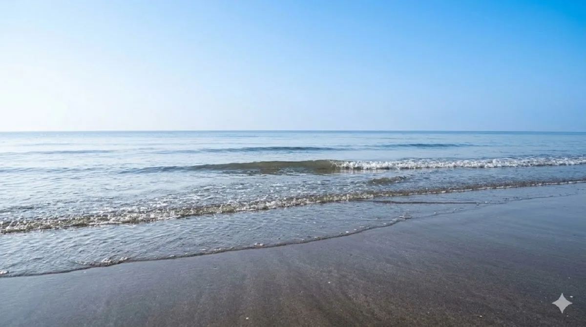
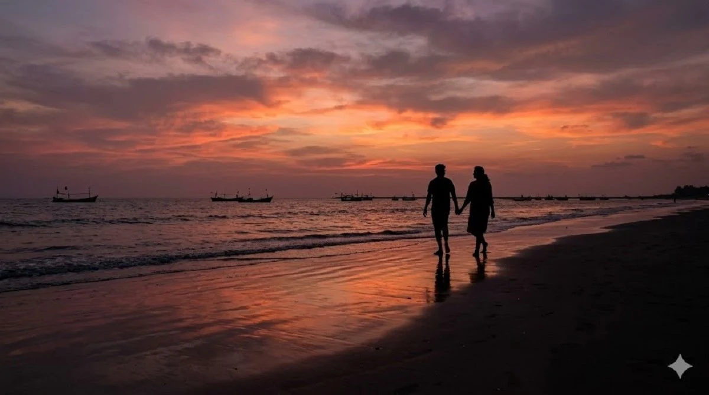

Nagaon Beach
Nagaon Beach is one of the most popular beaches in Alibaug.
It is known for water sports activities such as jet skiing,
banana boat rides and parasailing.
It is usually the best all-round recommendation for first-time visitors who
want a beach with activity, food access and easy weekend energy.

Kashid Beach
Kashid Beach is famous for its white sand shoreline and
clear blue water. It is one of the most scenic beaches
in the Alibaug region.
Kashid usually appeals more to scenic-travel visitors than to people looking
for a compact activity zone.

Alibaug Beach
Alibaug Beach is located close to the town center and
offers beautiful views of Kolaba Fort. It is one of
the most accessible beaches for visitors.
This is a practical choice when you want town convenience and sightseeing in
the same plan.
Kihim Beach
Kihim Beach is surrounded by greenery and is known
for its calm and peaceful atmosphere.
It is a popular destination for relaxing coastal walks.
Kihim usually fits travelers who want a quieter and more nature-led beach
experience.

Varsoli Beach
Varsoli Beach is located near Alibaug town and is
known for its clean shoreline and peaceful
environment.
It is a good choice for travelers who want something calmer without going far
from the town side.

Awas Beach
Awas Beach is a quieter beach located close to
Alibaug town and is known for its scenic
coastal surroundings.
Awas works well for low-key beach time and relaxed drives rather than activity
planning.

Mandwa Beach
Mandwa Beach is famous for ferry access
from Mumbai and beautiful sunset views
over the Arabian Sea.
It makes sense for ferry travelers and for short scenic stops near the arrival
side.
Revdanda Beach
Revdanda Beach is known for its historic
Portuguese fort ruins and long quiet
shoreline.
This beach is a stronger fit for travelers who want a scenic longer drive and a
mix of coast and history.
Akshi Beach
Akshi Beach is a peaceful destination
with fewer crowds compared to other
popular Alibaug beaches.
Akshi is often one of the better compromise beaches when you want quieter space
but still remain near the main Alibaug-Nagaon route.
Murud Beach
Murud Beach is famous for the nearby
Murud Janjira Fort and beautiful
coastal scenery.
It is more rewarding when built into a longer coastal day rather than squeezed
into a very short local stop.